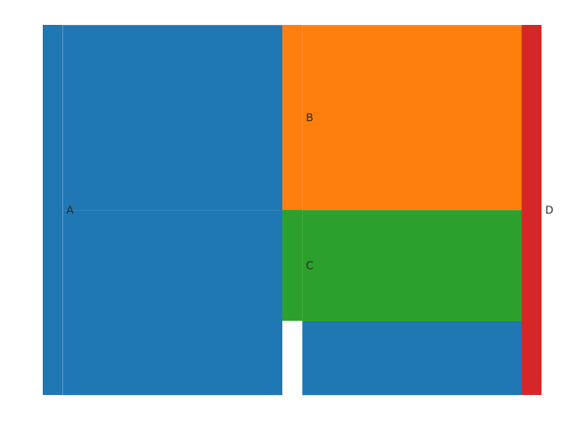
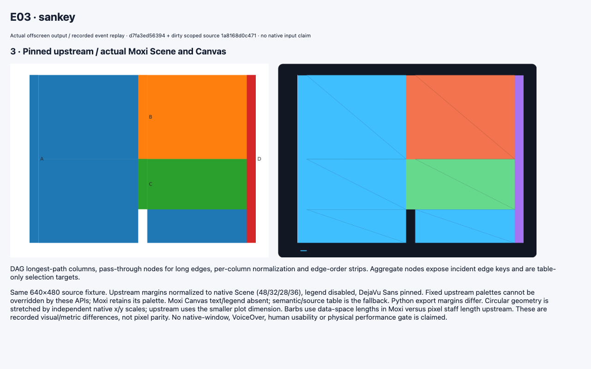
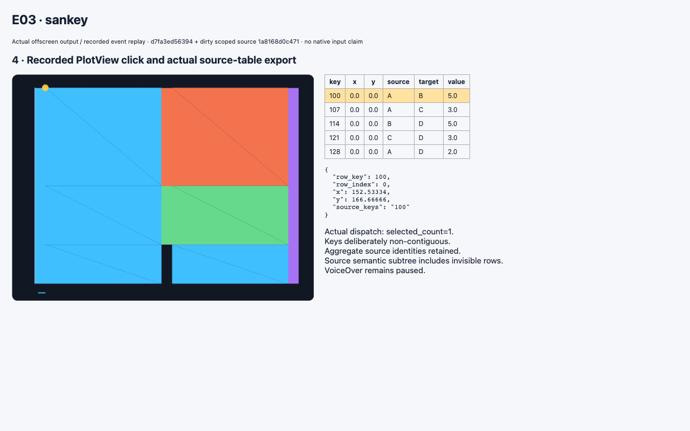
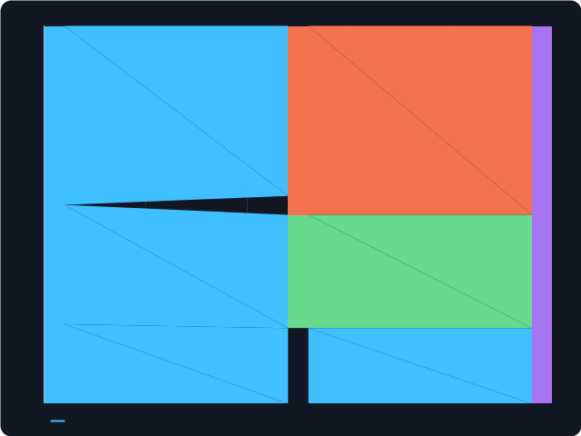
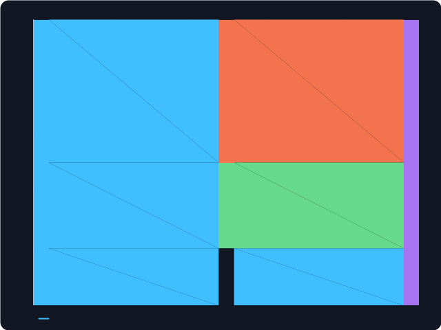

Source data/schema Action: Open source.html Expected: Actual fixture and version-1 contract
initial · browser · 1280 × 800 pixels

Real pinned upstream output Action: Run pinned upstream.py Expected: Actual pinned PNG
initial · offscreen-render · 640 × 480 pixels

Actual Moxi / reference comparison Action: Open comparison.html Expected: Classified structural and visual differences
result · browser · 1280 × 800 pixels

Actual source-key event replay and CSV fallback Action: Open selection.html after Mojo click dispatch Expected: Selected source row and complete table
interaction · browser · 1280 × 800 pixels

Source update and export Action: PlotView.replace_data(changed); Python SVG/PDF/PNG exports Expected: Actual recomputed geometry and cleared selection
result · offscreen-render · 640 × 480 pixels

Reject invalid data and restore source Action: Reject nonfinite replacement; restore original snapshot Expected: Original Canvas pixels restored exactly
recovery · offscreen-render · 640 × 480 pixels
Contact sheetReproduce
See ../plot-wave-b-c-review/REPRODUCE.md for this integrated-source batch and checks.
DAG longest-path columns, pass-through nodes for long edges, per-column normalization and edge-order strips. Aggregate nodes expose incident edge keys and are table-only selection targets. Same 640×480 source fixture. Upstream margins normalized to native Scene (48/32/28/36), legend disabled, DejaVu Sans pinned. Fixed upstream palettes cannot be overridden by these APIs; Moxi retains its palette. Moxi Canvas text/legend absent; semantic/source table is the fallback. Python export margins differ. Circular geometry is stretched by independent native x/y scales; upstream uses the smaller plot dimension. Barbs use data-space lengths in Moxi versus pixel staff length upstream. These are recorded visual/metric differences, not pixel parity. No native-window, VoiceOver, human usability or physical performance gate is claimed.
Screenshots show recorded states. They do not establish latency, scientific accuracy, physical IME, screen-reader behavior, or human usability.